Identita domu
Dvoupodlažní neobarokní vila mezi pivovarem a parkem (plán cp_995_001: vpravo „ČS. ARMÁDY TŘ.“, vlevo „areál pivovaru, už stáčírna“). Foto cp_995_001: uliční průčelí 3 osy, v patře balkon s obloukovými dveřmi, segmentový štít s oválným oknem; cp_995_003/005 boční a zadní strana s lodžií; cp_995_002 plot.
Použité prameny: cp_995_001 PLANE; cp_995_001..005 PHOTO.
GIS: GIS id 2938 (153,5 m², obdélník 12,9 × 12,0 m). V oblasti „Cs_Armady“ je dům veden podruhé se stejnými přílohami.
Prameny (11 příloh)
Všechny přílohy domu v databázi Libuše, každá otevřená a zapsaná v plan_search.json. Stav rešerše plánů: found; situační/střešní náčrt (ruční, nekótovaný, PLANE,BW) – není stavební výkres; půdorysné rozměry z GIS nebo odhad. Kliknutím otevřete větší náhled.

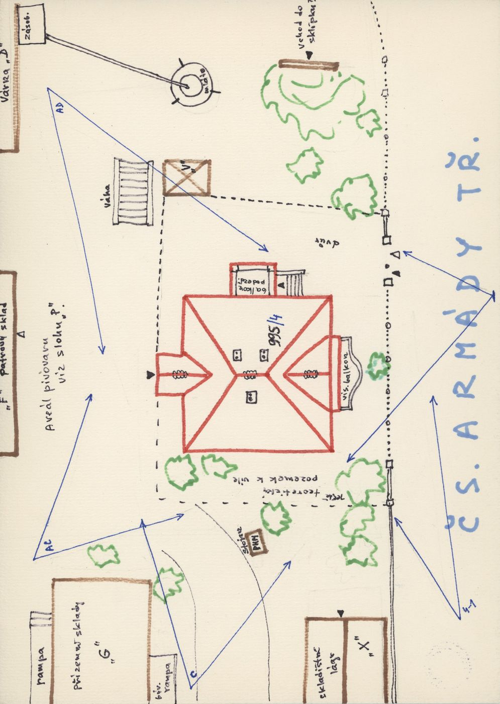
situační náčrt
SHA-256 ff90c711eb3d…

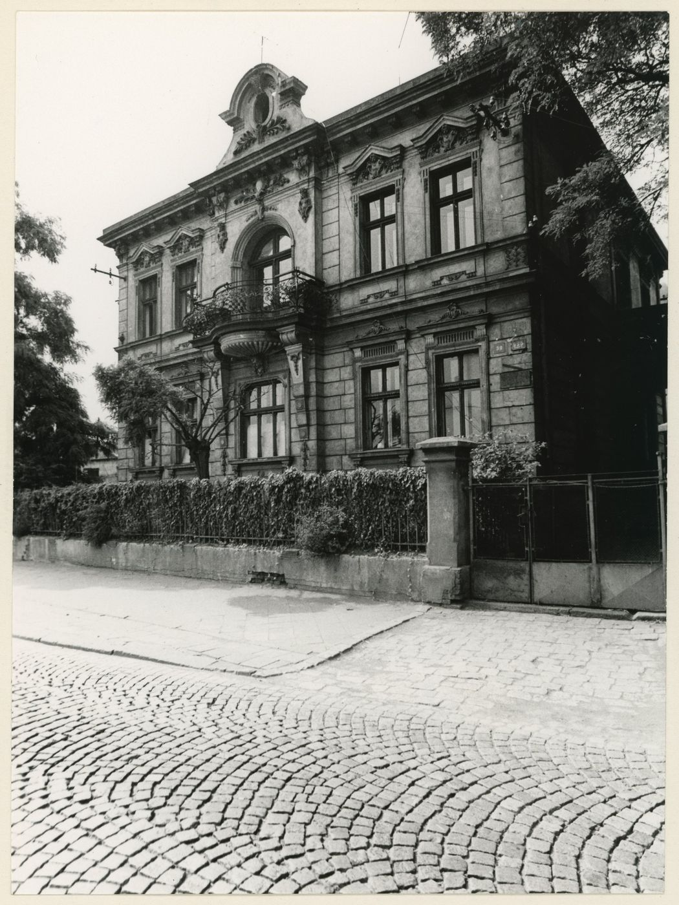
fotografie
SHA-256 63fab1c2e28c…

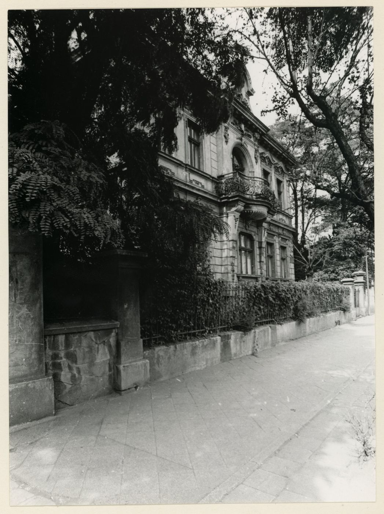
fotografie
SHA-256 5c8cdda61e7b…

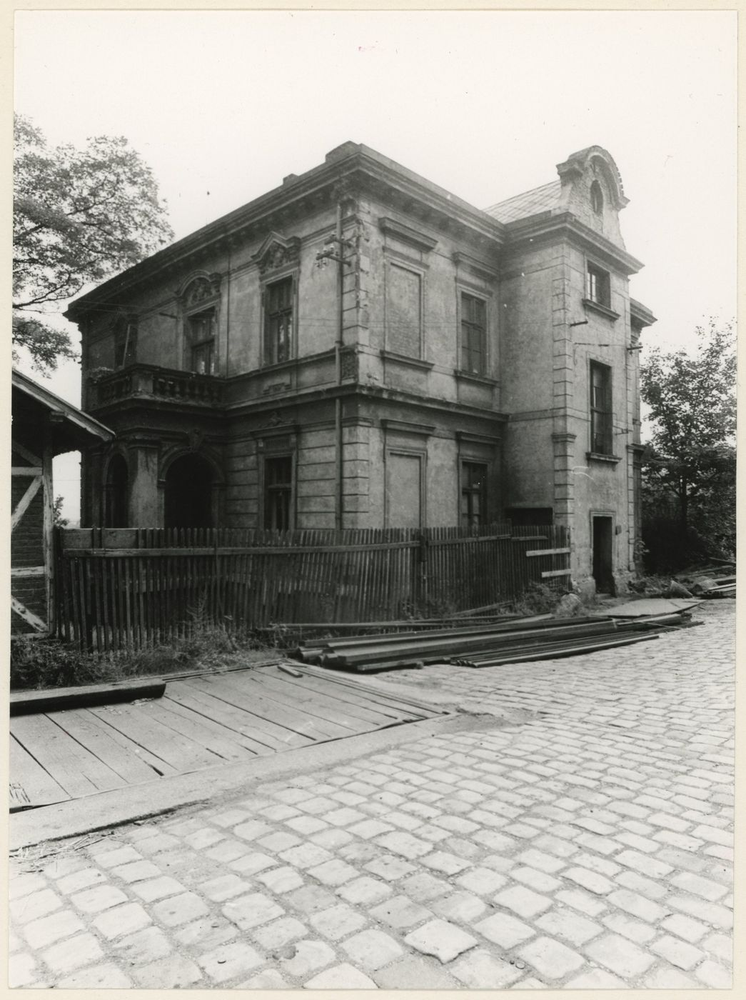
fotografie
SHA-256 db25f4e94b1a…

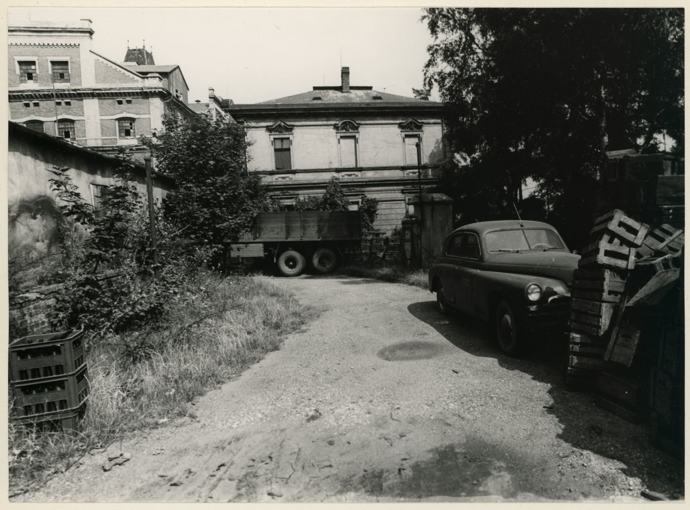
fotografie
SHA-256 eab17d1901a1…

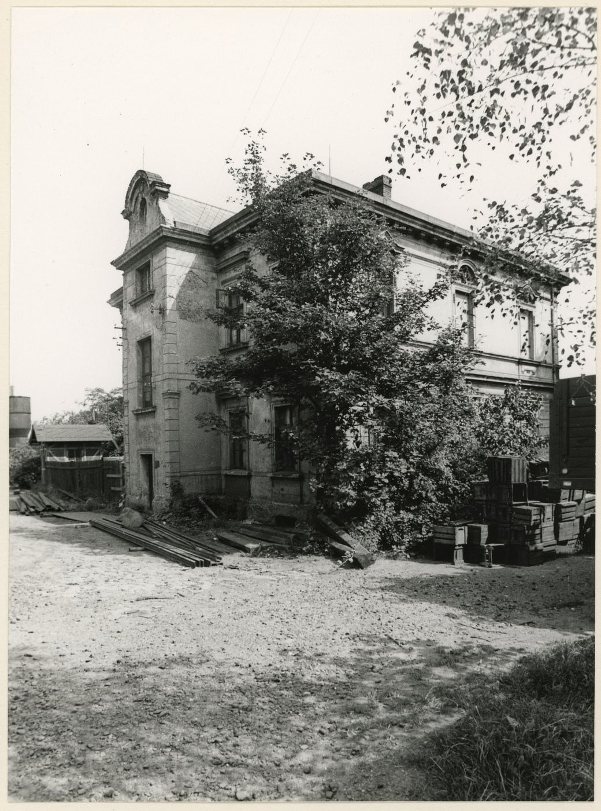
fotografie
SHA-256 48ade9aafa7d…

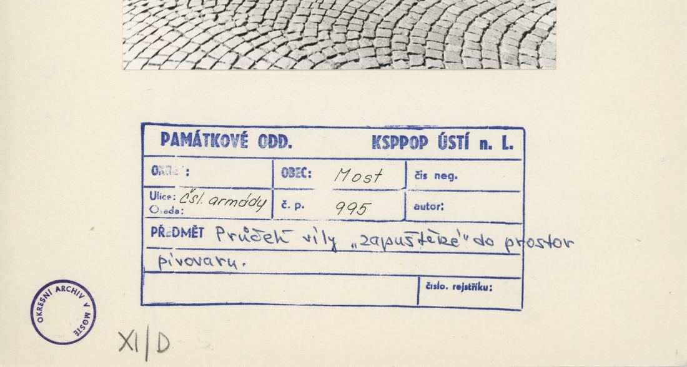
archivní karta (rub) · výřez textu
SHA-256 3d61bdb9fde7…

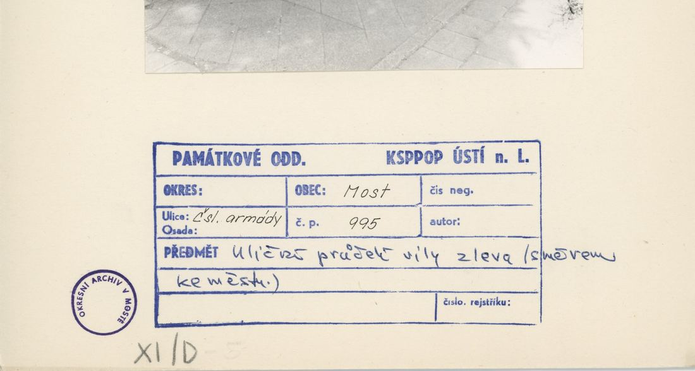
archivní karta (rub) · výřez textu
SHA-256 845b41424025…

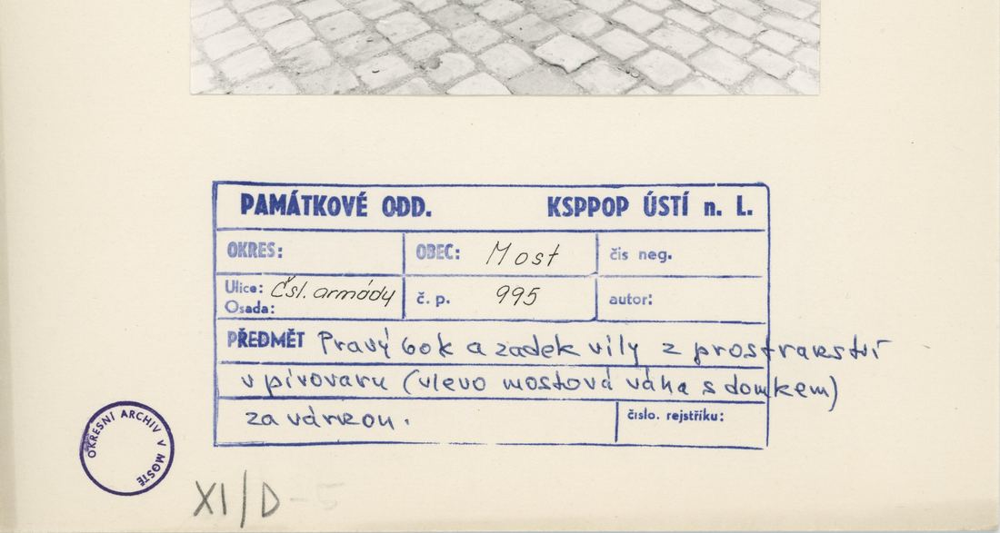
archivní karta (rub) · výřez textu
SHA-256 e7001580a4c7…

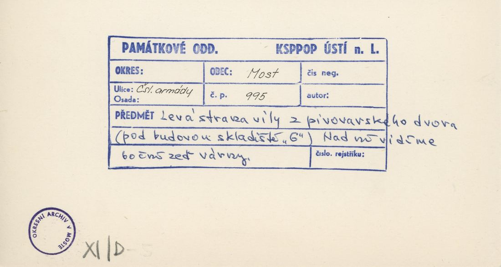
archivní karta (rub) · výřez textu
SHA-256 2ab92ef90874…

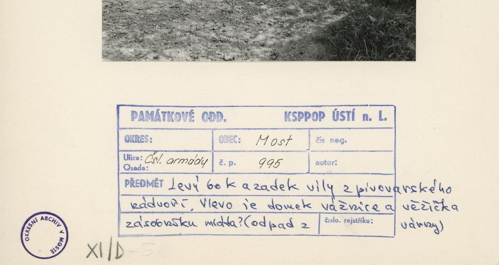
archivní karta (rub) · výřez textu
SHA-256 eb9cacb89e10…
Model
| Revize modelu | r4 (zachované revize: r1, r2, r4) |
|---|---|
| Poloha | GIS půdorys id 2938 |
| Šířka průčelí | 12,86 m |
| Výška okapu | 8,40 m (odhad) |
| Podlaží | 2 |
| Střecha podle pramenů | nízká valba se segmentovým štítem |
| Střecha v modelu | valbová / sedlová (hřeben, valby, štíty) |
| Otvory | 19 |
| Vikýře / vedlejší hmoty | 1 / 0 |
| Polygonů | 441 |
Zdroje rozměrů, jak jsou zapsány v plánu modelu
| Rozměry | GIS id 2938 rectangle 12.86 x 11.72 m |
|---|---|
| Průčelí | photo cp_995_001: 3 axes, 1st floor balcony with arched door, pediments, segmental gable with oval window; cp_995_003/005 sides |
| Střecha | low hip + gable dormer (photo) |
Kontrola r4: brána geometrie a 19 pohledů
Automatická brána (uzavřené podkroví, krytí střechou, UV, síť, počty otvorů proti fotografii s rámečkem) a 19 renderů: čtyři osy, čtyři šikmé pohledy na střechu, dva detaily průčelí, dva pohledy pod přední okap, pohled shora a šest pohledů bez barev materiálů. Stav: prošla.
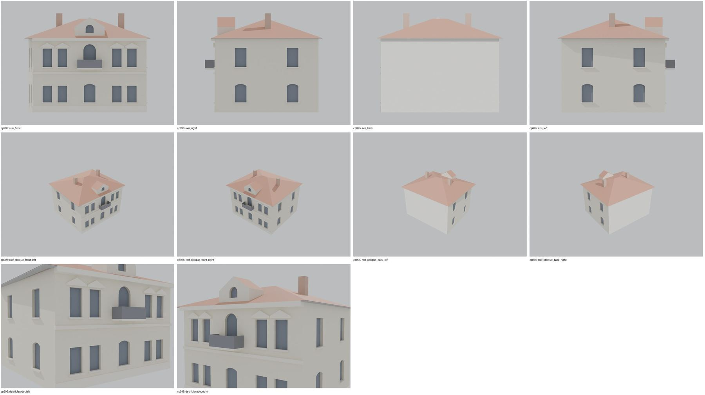
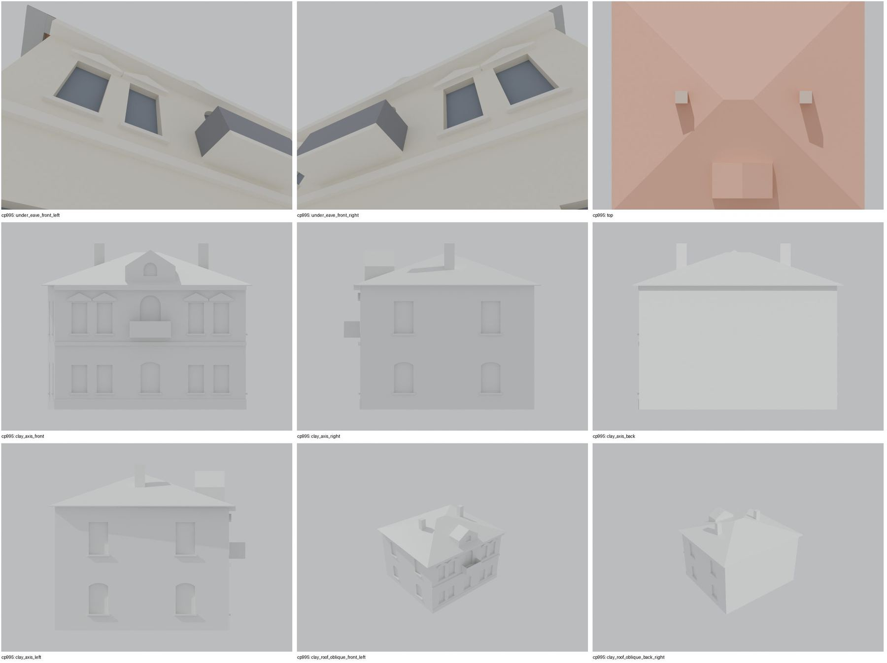
Nálezy a opravy
- 5 os průčelí a rizalit s balkonem a štítem sedí s cp_995_001
- boky a zadní strana hypotéza
- pohled pod okap uzavřený
Revize r4: doklad fasád a změny
Okna a dveře se počítají na fotografii s červeným rámečkem po dělicích zdech domu. Řádky oken jsou zdola nahoru; „hypotéza“ jsou otvory, které na snímku vidět nejsou.
| Fasáda | Okna po podlažích | Hypotéza (id otvorů) | Poznámka |
|---|---|---|---|
| main | 5 / 5 | – | 2 + rizalit + 2 osy v obou podlažích; vstup do vily není z ulice (hypotéza: vstup ze schodišťového výstupku na levé straně) |
| dormers | 1 | – | oválné okno ve štítu nad rizalitem |
| left | – | LG1, LG2, LU1, LU2 | na snímku 2 osy (přední slepé okno) a schodišťový výstupek; osy modelu ponechány jako hypotéza, výstupek nemodelován |
| right | – | RG1, RG2, RU1, RU2 | hypotéza |

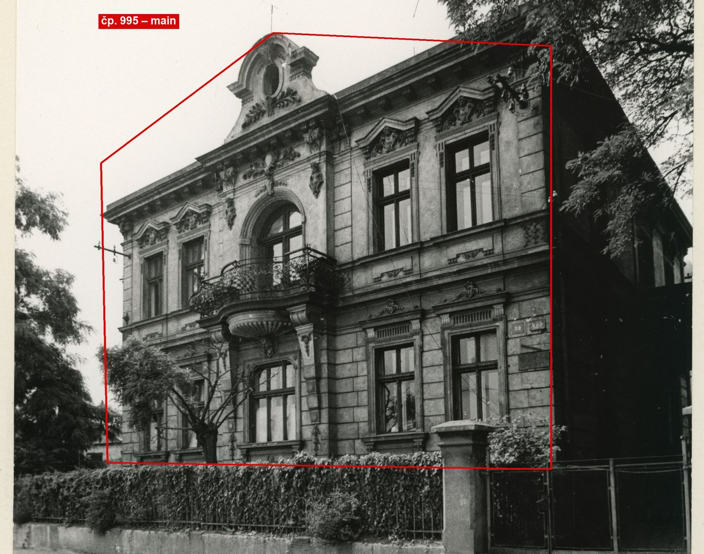
cp_995_001: uliční průčelí vily, 5 os v obou podlažích: 2 okna vlevo, střední rizalit (přízemí okno, patro obloukové balkonové dveře, nad ním štít s oválným oknem), 2 okna vpravo. Polohy os z 1D projektivního převodu (levý roh 0 m, pravý roh 12,86 m, střed rizalitu 6,43 m), dvojice zprůměrovány symetricky.

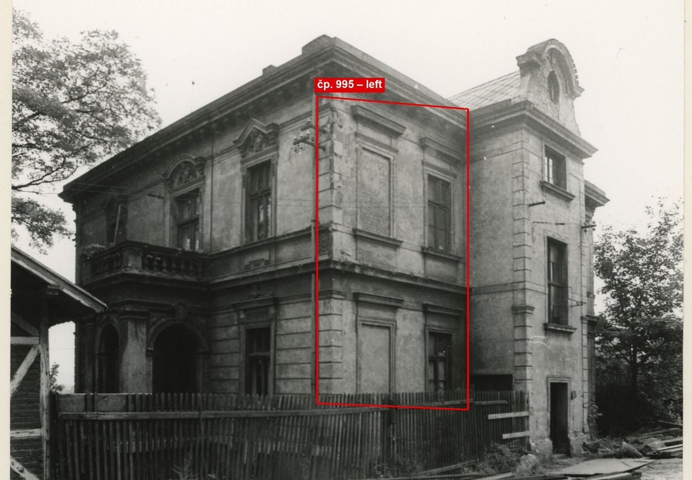
cp_995_003: zadní a levá strana; na levé straně 2 osy (přední slepé okno), u nároží schodišťový výstupek s dveřmi a 2 mezipodestovými okny – výstupek v modelu není (hypotéza).
Změny proti r2/r3
- closed attic, eave closures, gables along the roof underside, flat-roof covering slab, names for tools/most_qa (z4_post.py)
- facade evidence (framed photo cp_995_001): 5 axes per storey (2 + central risalit with the arched balcony door + 2); r2 had 3 axes
Hypotézy
Vše níže je model_hypothesis, provisional, locked: false.
- výšky odhad (přízemí 4,0, patro 3,8)
- zadní lodžie zjednodušena
- tvar střechy (nízká valba) z foto, sklon odhad
- rear loggia (photo cp_995_003) not modelled
- entrance on the garden side
- all storey heights, opening sizes and roof pitches are estimates from photographs (model_hypothesis, provisional, locked=false)
Soubory
- Model čp. 995, GLB
- Pracovní složka: F:\MOST\output\zatecka_street_claude_2026-10-17\houses\cp995\
plan_search.json,geometry_plan.json,README.md,texture_handoff_spec.json,r4/cp_995_G_r4.blend,r4/qa/qa_review.json, rámečkyframes/cp995_*